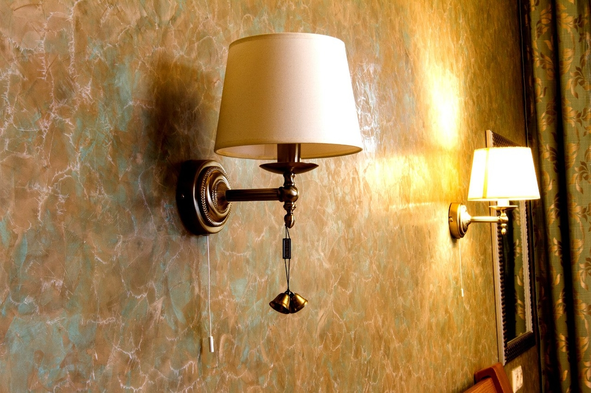
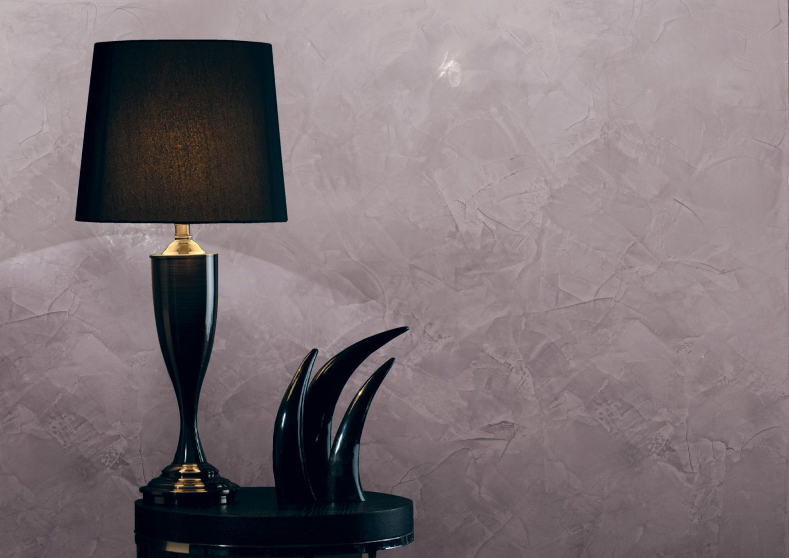

Венецианская штукатурка Нижний Новгород
Ещё в Древнем Риме изобретательные мастера однажды попробовали смешать мраморную пыль и гашеную известь. В результате получился совершенно новый отделочный материал, по своим свойствам не уступавший мрамору. Мягкий и эластичный, при этом невероятно прочный и долговечный, материал быстро получил широкое распространение. Стены с таким покрытием выглядят, как отделанные мрамором, но без швов.
Натуральные красители, добавленные в состав, делали рисунок более четким. Глина использовалась в качестве красителя чаще всего. Благодаря этому на стенах появлялись розоватого или рыжеватого оттенка разводы, что делало стену еще более похожей на мраморную.
Для придания штукатурке долговечности стародавние мастера покрывали стену воском. Слой воска затем полировался. Такая защита делала стены устойчивыми к воздействию солнца, воды, температурных перепадов. Здания с таким покрытием сложно было отличить от мраморных. Единственным отличием было отсутствие швов.
С наступлением эпохи Возрождения покрытие из мраморной пыли и извести было привезено в Венецию. Здесь штукатурке нашли применение: теперь она использовалась вместо мраморных плит. Работа с такой штукатуркой была не из простых, и правильно нанести ее могли лишь самые умелые мастера, но все же подгонка и шлифовка тяжелых мраморных плит – процесс куда более тяжелый.

Отделка венецианской штукатуркой получила широкое распространение. Материал
использовался, например, во дворцах – для украшения стен, потолков, колонн.
Соответственно, создавались разные виды декоративной штукатурки.
В результате получалось красивое и надежное покрытие. Высокая влажность и
изменения температуры не грозили этому материалу, поэтому в скором времени его
полюбили все жители города на воде.
Также мраморную пыль было проще привозить в город, а еще она отличалась
невысокой стоимостью. А остальные части состава добавлялись в материал, будучи
добытыми в самой Венеции. Красивая и прочная штукатурка обрела славу благодаря
местным купцам, которые называли отделку венецианской штукатуркой – с тех пор
название это так и осталось.
Состав современной венецианской штукатурки
Классический состав штукатурки – измельченная мраморная крошка, гашеная известь
и красители – остался практически без изменений. Натуральные компоненты
безвредны для здоровья людей и состояния экологии.
В современную штукатурку добавляют акриловые красители, а вместо извести иногда
используется безвредный полимерный состав.
Кроме этого, в составе можно встретить следующие компоненты:
сок каучуковых деревьев;
измельченный гранит;
гипс.
Разные производители используют те или иные добавки, но материал в любом случае
остается той же венецианской штукатуркой, произведенной на основе мраморной
пыли.
Использование венецианской штукатурки в современном мире
Зарекомендовавшее себя покрытие активно используется по сей день.
Штукатурку можно встретить в отделке стен и потолка таких заведений,
как:
торгово-развлекательные центры;
конференц-залы, холлы, офисы;
галереи, музеи, выставочные залы;
вместо обоев в ресторанах, отелях, барах.

Кроме того, покрытие превосходно подходит для использования в квартирах – стены, потолки в комнатах сделают внешний вид интерьера богатым и изысканным. Владельцы помещений, желающие не только облагородить интерьер, но и забыть о ремонте и бытовых неприятностях вроде грибка на годы вперед, могут заказать венецианскую штукатурку.
Преимущества использования венецианской штукатурки
Сквозь столетия этот отделочный материал доказал свою надежность, износостойкость и удобство в эксплуатации.
Достоинства штукатурки:
1. Обладая полупрозрачным эффектом, венецианская штукатурка визуально делает
помещение более просторным;
2. Покрытие славится высокой устойчивостью к сырости, грибкам,
заплесневению;
3. При нанесении покрытия не остается ни швов, ни стыков;
4. Внешний вид покрытия неотличим от благородного мрамора.
Купить венецианскую штукатурку в Нижнем Новгороде можно у нас на выгодных условиях
Уникальная поверхность под мрамор после обработки воском приобретает блеск, а солнечные лучи, отражаясь на различной глубине многослойного полупрозрачного покрытия, дают дополнительный перламутровый эффект.